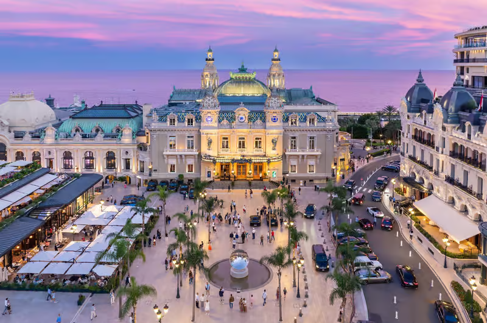

Mónaco es un pequeño país situado en la costa del mar Mediterráneo, en Europa, cerca de la frontera con Francia. Es uno de los países más pequeños del mundo y destaca por su clima mediterráneo, sus paisajes costeros y su estilo de vida lujoso. Su capital es Mónaco y su idioma oficial es el francés.
Mónaco es conocido internacionalmente por su riqueza, sus casinos, sus hoteles de lujo y su puerto, donde atracan numerosos yates. Uno de sus lugares más famosos es Montecarlo, una zona muy turística que alberga el prestigioso Casino de Montecarlo. Además, el país es una importante sede de eventos deportivos y culturales.
Uno de los acontecimientos más destacados de Mónaco es el Gran Premio de Fórmula 1, una carrera que se disputa por las calles del principado y que forma parte del Campeonato Mundial de Fórmula 1. Su circuito urbano es famoso por sus curvas estrechas, sus túneles y su dificultad, lo que convierte esta prueba en una de las más emblemáticas del automovilismo.
Página web oficial de turismo de Mónaco